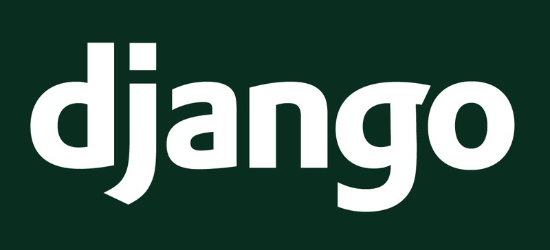

Django Framework
En este sitio web veremos más acerca de lo que es Django, caracteristicas, ventajas y desventajas
¿Que es Django?
Django es un framework web de alto nivel que permite el desarrollo rápido de sitios web seguros y mantenibles. Django es un framework web de alto nivel que permite el desarrollo rápido de sitios web seguros y mantenibles.
Origen
Django fue desarrollado inicialmente entre 2003 y 2005 por un equipo que era responsable de crear y mantener sitios web de periódicos. Después de crear varios sitios, el equipo empezó a tener en cuenta y reutilizar muchos códigos y patrones de diseño comunes. Este código común se convirtió en un framework web genérico, que fue de código abierto, conocido como proyecto "Django" en julio de 2005.
Django es ahora un próspero proyecto colaborativo de código abierto, con miles de usuarios y contribuidores. Mientras que todavía presenta algunas características que reflejan su origen, Django ha evolucionado en un framework versátil que es capaz de desarrollar cualquier tipo de sitio web.
Ventajas y Desventajas en Django
Ventajas
- Completo
- Provee casi todo lo que los desarrolladores quisieran que tenga "de fábrica".
- Versatil
- Django puede ser usado para construir casi cualquier tipo de sitio web. Puede funcionar con cualquier framework en el lado del cliente, y puede devolver contenido en casi cualquier formato
- Seguro
- Django ayuda a los desarrolladores evitar varios errores comunes de seguridad al proveer un framework que ha sido diseñado para "hacer lo correcto" para proteger el sitio web automáticamente.
- Portable
- Django está escrito en Python, el cual se ejecuta en muchas plataformas. Lo que significa que no está sujeto a ninguna plataforma en particular, y puede ejecutar sus aplicaciones en muchas distribuciones de Linux, Windows y Mac OS X.
Desventajas
- Velocidad
- Python es un lenguaje interpretado que se hizo para ser bello y simple, no necesariamente rápido.
- Curva de aprendizaje moderada
- Django sigue la filosofía de baterías incluidas. Lo cual es bueno, porque es código que te ahorras al escribir, pero también malo, pues es código que necesitas aprender a usar.
- Alternativas mas sencillas
- Lengiajes de programacion mas modernos y actualez pueden suplir facilmente a Django.
Enlaces externos
En esta seccion encontraras informacion sobre otros blogs de Django.
| Enlaces Disponibles | |
|---|---|
| ¿Porque usar Django? | Enlace aqui |
| Introduccion a Django | Pagina web |
| ¿Que es django y porque importa? | Video |